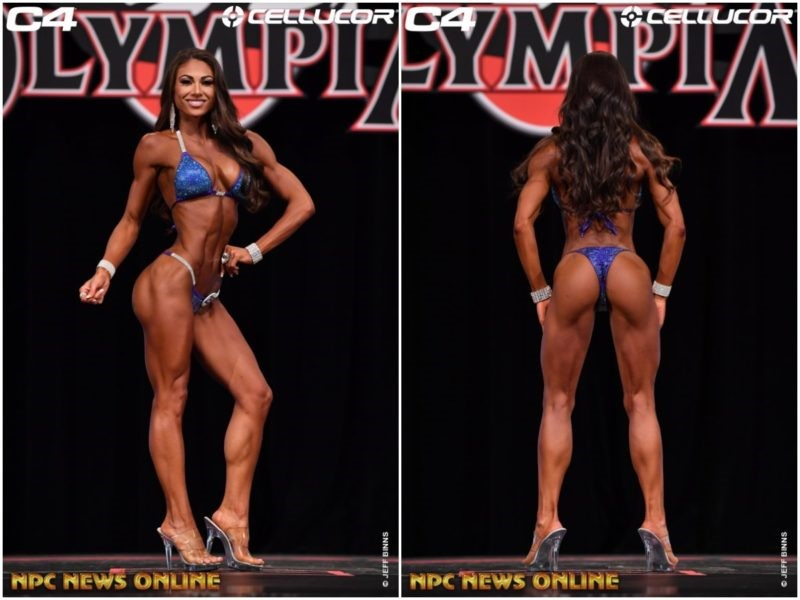

NPC.
Fitness y culturismo natural.

FISICOCULTURISMO NATURAL
El fisicoculturismo es una actividad física consistente
en la realización de un programa de entrenamiento con
pesas con la intención de desarrollar y controlar la
musculatura. La mayoría de veces el culturismo consiste
en un programa de entrenamiento con pesas en un gimnasio
en el que se realizan diversos tipos de ejercicios de
fuerza, orientados a generar hipertrofia muscular.
Debido al aumento de la pasión por la vida sana, por el
deporte y la estética, han nacido otras modalidades a
partir del culturismo que no buscan unos músculos tan
masivos o tan grandes.
Con esto, lo que se pretende es que no solo sea imprescindible
la estética sino que por lo general se busca un aumento de
todas las capacidades, o de las máximas capacidades posibles
(flexibilidad, fuerza, velocidad, resistencia…) acompañadas
claro está de una estética proporcionada.
El culturismo natural es un movimiento del culturismo con varias
competiciones que tienen lugar para los culturistas que se
abstienen de utilizar dopaje. Esto excluye categóricamente el
uso de sustancias como esteroides, insulina, diuréticos y hormona
de crecimiento.
WNBF Colombia dedicará toda su energía a crear espacio para
todos aquellos que creen en la conducta ejemplar del culturismo
y el deporte libre de drogas. Esto es lo que la WNBF ha defendido
durante más de 31 años, y continuaremos con este enfoque moral y
ético de las pruebas de drogas en mi país.
¿Por qué escogí el tema del culturismo?
Es un deporte que me ha llamado la atención desde hace unos 5 años.
Lo conocí y más adelante me motivé a entrenar más en serio por un
youtuber llamado Jorge Tabet, no cocompite en una liga de culturismo
natural, pero lo que me gusta es la disciplina que tiene, tanto en la
alimentación como a la hora de entrenar.Además siento que este deporte
en una terapia, ya que libera el estrés.